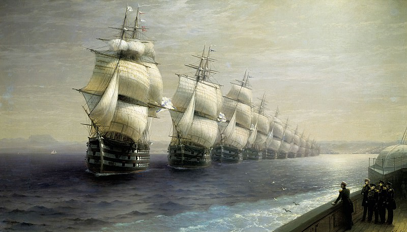

Бурлаки на Волге - Илья Репин
Описание картины "В праздник - Николай Кузнецов":
Картина принадлежит к числу самых выдающихся произведений русской живописи. Она начинала собой новую эпоху в истории отечественного искусства. Художник поставил своей целью создать монументальное полотно, посвященное жизни народа и не только раскрывающее тяжесть его доли, но и воспевающее его духовную силу. В 1868 году, катаясь по Неве в Петербурге, Репин впервые увидел бурлаков и был поражен зрелищем оборванных, впряженных в лямку людей, особенно по контрасту с гуляющей публикой. После двух поездок на Волгу, близко познакомившись с бурлаками, он обратился к утверждению нового героя, которого не знала русская живопись. На фоне широкого волжского пейзажа в жаркий летний день движется многоликая бурлацкая ватага. Каждый из героев картины был для Репина живым лицом со своей судьбой, характером, внутренним миром. Не раз виденную в натуре сцену Репин поднял до широкого обобщения, сохранив при этом свежесть непосредственного жизненного впечатления, наполнив картину широким дыханием волжских просторов. С картины «Бурлаки на Волге», высоко оцененной на Всемирной выставке в Вене (1873), началась европейская известность Репина. Тяжеловесным скульптурным фризом выглядит группа людей в жаркий летний день на фоне широкого волжского пейзажа, высветленного песка, воды и неба. Группа представляет единое целое и в то же время состоит из трех отдельных частей. В авангарде — ведущий бурлак, поп-расстрига Канин, голова которого напоминает лицо древнегреческого философа. «Какая глубина взгляда, приподнятого к бровям, тоже стремящимся на лоб. А лоб — большой, умный, интеллигентный лоб — это не простак…», — делился своими впечатлениями Репин. В целом, рождается суровый групповой портрет одиннадцати бурлаков, созданный по правилам «высокого жанра». Такое решение бурлацкой темы стало неожиданным для представителей определенных официальных кругов. Репин закончил картину в марте 1873 года. Она была впервые выставлена в Санкт-Петербурге в этом же месяце на художественной выставке произведений живописи и скульптуры, предназначенных для отправки на Всемирную выставку. На Всемирной выставке в Вене (1873) картина завоевала бронзовую медаль и была куплена за 3000 рублей великим князем Владимиром Александровичем, который повесил ее в своем дворце в Петербурге.
Больше информации о картине...